2D elastic seismic modeling¶
Introduction¶
In order to solve the wave motion equation, a variety of numerical method have been developed such as the finite-differences method ([KWTA76][Vir84][Vir86][LHMB16]), the pseudo-spectral method ([FMPQ97]), the finite-element method ([SSKB90][MM03]) or the spectral element method ([KVV+99][KTT05]). Among these methods, the finite-difference method (FD) is the most popular and one of the most widely used because of its ease of implementation and use, its robustness, and its reasonable computational cost.
Governing equation¶
The equation of motion in an elastic medium can be written, in its compact formulation, as ([AR02][VCAB+16]):
(1)¶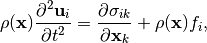
where 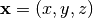 is the position vector,  is the displacement field,
is the displacement field,  is the stress tensor, 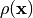 is the density and 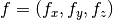 is the a volumetric force.
is the stress tensor, 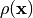 is the density and 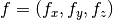 is the a volumetric force.
The stress tensor  , which allows to describe the elastic medium, is lineary relied to the strain tensor
, which allows to describe the elastic medium, is lineary relied to the strain tensor  through the fourth-rank elastic tensor 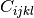. This linear relation, called generalized Hooke’s law, is defined as follow:
through the fourth-rank elastic tensor 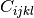. This linear relation, called generalized Hooke’s law, is defined as follow:
(2)¶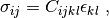
where
(3)¶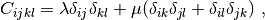
where  is the Kronehker symbol and
is the Kronehker symbol and  and
and  are the Lamé parameters.
are the Lamé parameters.
The strain tensor corresponds to the symetric part of the displacement derivatives with respect to space, i.e. to the deformation of the elastic body such as:
(4)¶
Combining equations (2) and (4), and injecting the result in equation (1) leads to the second order hyperbolic system, called displacement-stress formulation. In 2D, where all derivative with respect to  vanishes, the displacement-stress formulation is:
vanishes, the displacement-stress formulation is:
(5)¶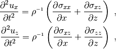
where:
(6)¶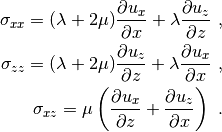
This system can be expressed in term of velocity instead of displacement which leads to the first-order hyperbolic system, called velocity-stress formulation:
(7)¶![\frac{\partial v_{x}}{\partial t} = \rho^{{\scriptscriptstyle-1}} \left( \frac{\partial \sigma_{xx}}{\partial x} + \frac{\partial \sigma_{xz}}{\partial z} \right) \nonumber \\
\frac{\partial v_{z}}{\partial t} = \rho^{{\scriptscriptstyle -1}} \left( \frac{\partial \sigma_{xz}}{\partial x} + \frac{\partial \sigma_{zz}}{\partial z} \right) \nonumber \\
\frac{\partial \sigma_{xx}}{\partial t} = (\lambda+2\mu)\frac{\partial v_{x}}{\partial x} + \lambda \frac{\partial v_{z}}{\partial z} \\
\frac{\partial \sigma_{zz}}{\partial t} = (\lambda+2\mu)\frac{\partial v_{z}}{\partial z} + \lambda \frac{\partial v_{x}}{\partial x} \nonumber \\
\frac{\partial \sigma_{xz}}{\partial t} = \mu \left( \frac{\partial v_{x}}{\partial z} + \frac{\partial v_{z}}{\partial x } \right) \nonumber](_images/math/5115ab40b43fd54e8dfb369208d0e6f9e3217c97.png)
Staggered grid¶
The staggered-grid approach ([Lev88]), initially developed for two-dimensional P-Sv seismic wave propagation modeling, is fourth-order accurate space and second order accurate time (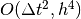) numerical scheme.
The staggered-grid allows to correctly model any variation of the material properties with a minimal numerical dispersion and anisotropy. The scheme can also be used to model wave propagation in mixed acoustic-elastic media with a good accuracy.
Discretization¶
Given the use of the staggered-grid scheme to discretize the space, forward and backward finite-difference operators are use to solve the velocity-stress equations.
The fourth-order forward ( ) and backward (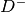) operators are widely used and are defined, in 1D, as:
) and backward (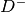) operators are widely used and are defined, in 1D, as:
(8)¶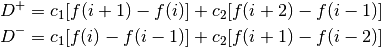
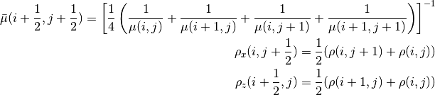
Initial and boundary conditions¶
PML absorbing boundary conditions¶
At the scale of seismic exploration and less, the target area (i.e. the model), is a semi-infinite space bounded only at the top by a free surface. It is thus necessary to simulate a infinite medium at the lateral and bottom boundary. This can be achieve using the Perfectly Matched Layer (PML) absorbing boundaries. PML were initially developed in the framework of electro-magentic modeling by [Ber94] and was quickly adopted in seismic modeling.
In the time domain, PML can be defined as:
(9)¶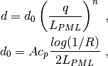
where  is the distance from PML intern boundary, 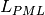 is the width of the PML,
is the distance from PML intern boundary, 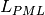 is the width of the PML,  is the amplitude of the PML,
is the amplitude of the PML,  is the P-wave velocity and
is the P-wave velocity and  is a reflection coefficient generally low. PML are parametrized following recommandations of [FV05]: 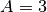 and 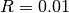.
is a reflection coefficient generally low. PML are parametrized following recommandations of [FV05]: 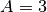 and 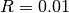.
Free surface¶
As discussed in the previous subsection, the earth structures must be considered as semi-infinite space due to the presence of a free surface defined by the topography. Given the strong formulation of the wave equation used by finite-difference methods, the free surface must be explicitly defined.
The image theory method is a way to apprximate the free surface and was firstly proposed by [Lev88].
At free surface boundary condition  , all normal stresses vanish:
, all normal stresses vanish:
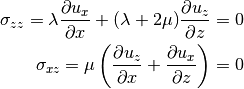
If the free surface on the staggered grid is defined along 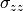, is explicitly set to 0 and 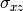 over the free surface is an odd function such as:
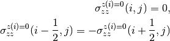
 and 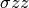.
and 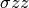.Precision and stability¶
References¶
| [AR02] | Keiiti Aki and Paul G Richards. Quantitative seismology. Volume 1. University Science Books,U.S., 2002. |
| [Ber94] | Jean-Pierre Berenger. A perfectly matched layer for the absorption of electromagnetic waves. Journal of computational physics, 114(2):185–200, 1994. doi:10.1006/jcph.1994.1159. |
| [BS06] | (1, 2) Thomas Bohlen and Erik H Saenger. Accuracy of heterogeneous staggered-grid finite-difference modeling of rayleigh waves. Geophysics, 71(4):T109–T115, 2006. doi:10.1190/1.2213051. |
| [FMPQ97] | E Faccioli, F Maggio, R Paolucci, and A Quarteroni. 2d and 3d elastic wave propagation by a pseudo-spectral domain decomposition method. Journal of seismology, 1(3):237–251, 1997. |
| [FV05] | Gaetano Festa and Jean-Pierre Vilotte. The newmark scheme as velocity–stress time-staggering: an efficient pml implementation for spectral element simulations of elastodynamics. Geophysical Journal International, 161(3):789–812, 2005. URL: http://dx.doi.org/10.1111/j.1365-246X.2005.02601.x, doi:10.1111/j.1365-246X.2005.02601.x. |
| [Gra96] | R.W. Graves. Simulating seismic wave propagation in 3d elastic media using staggered-grid finite-differences. BSSA, 1996. |
| [KWTA76] | KR Kelly, RW Ward, Sven Treitel, and RM Alford. Synthetic seismograms: a finite-difference approach. Geophysics, 41(1):2–27, 1976. doi:10.1190/1.1440605. |
| [KTT05] | Dimitri Komatitsch, Seiji Tsuboi, and Jeroen Tromp. The spectral-element method in seismology. Seismic Earth: Array Analysis of Broadband Seismograms, pages 205–227, 2005. doi:10.1029/157gm13. |
| [KVV+99] | Dimitri Komatitsch, Jean-Pierre Vilotte, Rossana Vai, Jose M Castillo-Covarrubias, and Francisco J Sanchez-Sesma. The spectral element method for elastic wave equations-application to 2-d and 3-d seismic problems. International Journal for numerical methods in engineering, 45(9):1139–1164, 1999. doi:10.1002/(sici)1097-0207(19990730)45:9<1139::aid-nme617>3.0.co;2-t. |
| [Lev88] | (1, 2, 3) Alan R Levander. Fourth-order finite-difference p-sv seismograms. Geophysics, 53(11):1425–1436, 1988. |
| [LHMB16] | Y. Li, B. Han, L. Métivier, and R. Brossier. Optimal fourth-order staggered-grid finite-difference scheme for 3d frequency-domain viscoelastic wave modeling. Journal of Computational Physics, 321:1055 – 1078, 2016. URL: http://www.sciencedirect.com/science/article/pii/S0021999116302431, doi:https://doi.org/10.1016/j.jcp.2016.06.018. |
| [MM03] | Faranak Mahmoudian and Gary F Margrave. A review of the finite-element method in seismic wave modelling. Technical Report, Technical report, CREWES Research Report, 2003. |
| [SSKB90] | F. J. Seron, F. J. Sanz, M. Kindelan, and J. I. Badal. Finite-element method for elastic wave propagation. Communication in Applied Numerical Methods, 6:359–368, 1990. |
| [vVRC02] | Robbert van Vossen, J. O. Robertsson, and Chris H. Chapman. Finite-difference modeling of wave propagation in a fluid-solid configuration. Geophysics, 7(2):618–624, March-April 2002. doi:10.1190/1.1468623. |
| [Vir84] | Jean Virieux. Sh-wave propagation in heterogeneous media: velocity-stress finite-difference method. Geophysics, 49(11):1933–1942, 1984. |
| [Vir86] | (1, 2) Jean Virieux. P-sv wave propagation in heterogeneous media: velocity-stress finite-difference method. Geophysics, 51(4):889–901, 1986. |
| [VCAB+16] | Jean Virieux, V Cruz-Atienza, R Brossier, Emmanuel Chaljub, O Coutant, S Garambois, D Mercerat, V Prieux, Stéphane Operto, A Ribodetti, and others. Modelling seismic wave propagation for geophysical imaging. Intech, 2016. |